What happened in 2007?
It's the damn phones!
Inspired by WTF Happened in 1971 I wanted to make a website detailing many charts that show something weird is happening.
Beginning around the late 2000s and accelerating through the 2010s, a series of troubling trends emerged. Measures of well-being, including happiness and life satisfaction, began to show signs of strain. Youth mental health entered a state of crisis, with rates of depression, anxiety, and self-harm rising to unprecedented levels. Concurrently, metrics of cognitive performance and academic achievement, such as international test scores and measures of fluid intelligence, appeared to stagnate or decline after decades of progress. Labour productivity growth, a cornerstone of economic prosperity, slowed to a crawl.
We had many major events in that time including the Great Recession and COVID-19 that had an large impact, but my hypothesis is that the introduction of the iPhone, and thus the modern mobile age is causing a huge impact on attention and is limiting life outcomes of millions around the globe.
This is not an attempt to say these trends are monocausal - it is worth remembering that Correlation != Causation - but it is at the very minimum interesting that the charts seem to line up around 2007, and increase in magnitude of upward or downward slope as adoption of smartphones increase.
If you have some interesting charts in the same vein, please feel free to open a PR here or email me at 2007@adamfallon.com
If you are interested in doing research in this area, would love to speak!
You can find me here:
- adam@adamfallon.com / 2007@adamfallon.com
- https://x.com/afallon02
- https://www.linkedin.com/in/adam-fallon-4bb4b1300/
This is a work in progress. I want the arguement to get strong over time, it is probably a little weaker than it should be right now, but I think it's obvious something interesting has happened since 2007.
IQ Scores
The "reverse Flynn effect" refers to a recent decline or plateau in average IQ scores in some developed countries, contrasting with the historical rise in IQ scores known as the Flynn effect. This trend, sometimes called the negative Flynn effect, is attributed to factors like changes in education, lifestyle shifts such as increased screen time, and other environmental influences
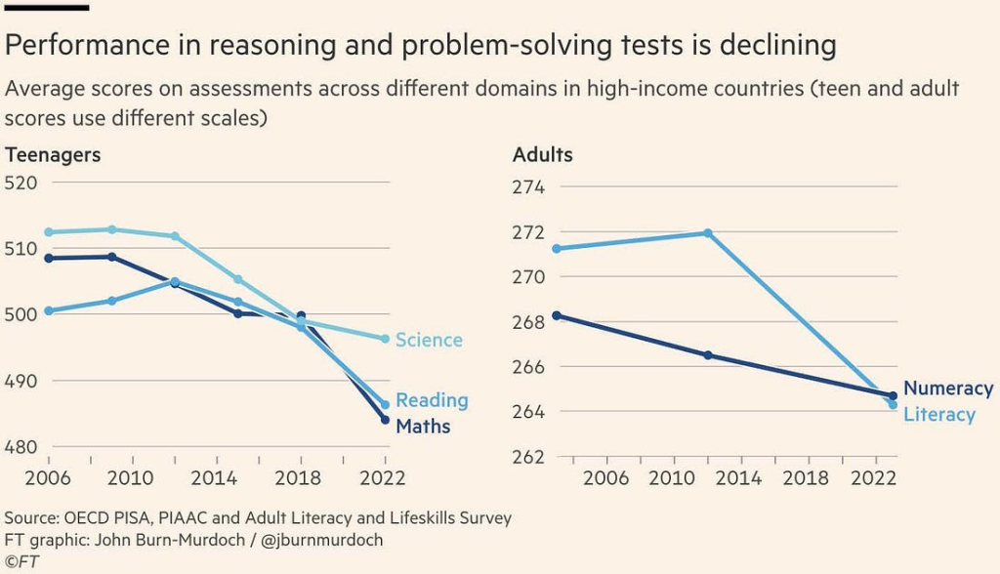
Figure 1: Reverse Flynn Effect
Increase in smartphone adoption
Smartphones achieved market saturation much faster than technologies before it.
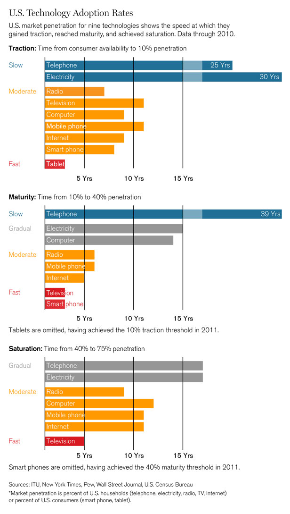
Figure 2: Technology Adoption Rates
By 2014 there was over a billion smart phone devices.
From 2014 to 2024 that number increased to 4.88 billion (source: https://www.bankmycell.com/blog/how-many-phones-are-in-the-world)
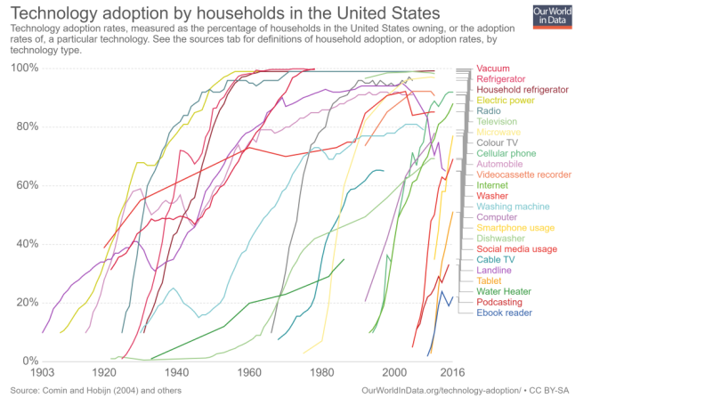
Figure 3: Technology Adoption Rates
Around 60% of the world's population has a smartphone. In some markets smartphone adoption is at 82.2% - which is to say, these devices are ubiquitous and especially so in advanced nations.
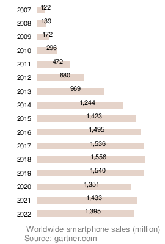
Figure 4: SmartPhone Sales
Internet traffic is now primarily coming from mobile devices. It took a while for this to flip, but the act of 'Going online' went from one where you sat at a desktop, to one of being constantly online, connected 24/7/365
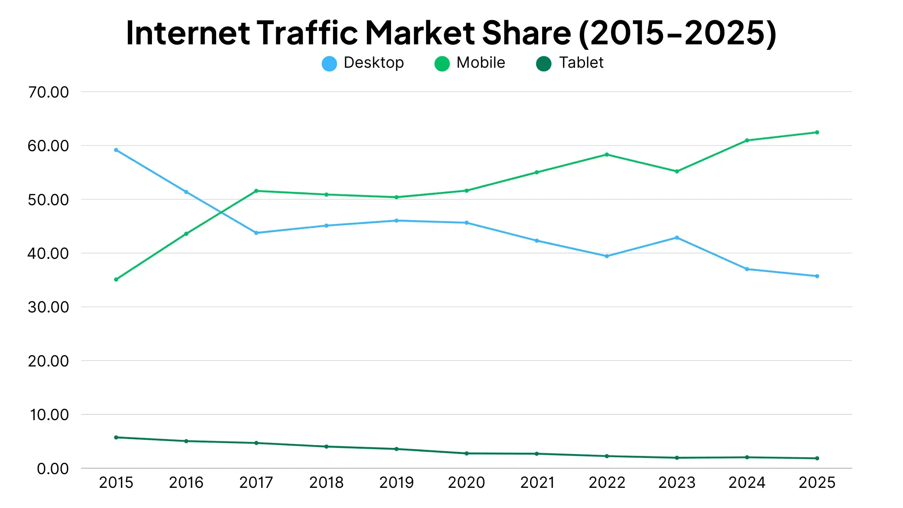
Figure 5: Traffic Trends over time
Test Scores
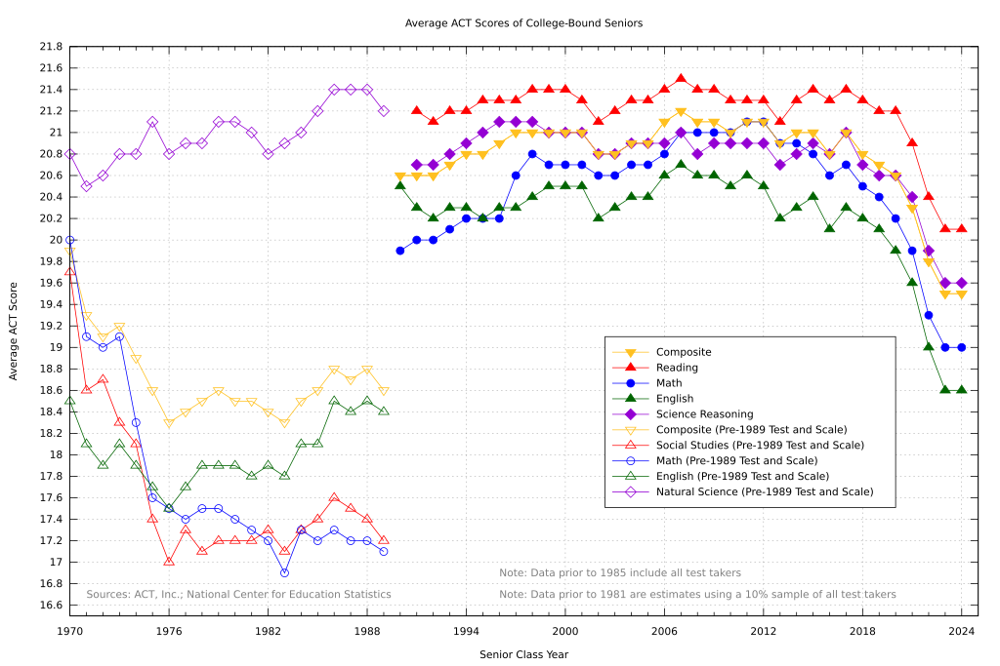
Figure 6: ACT Scores
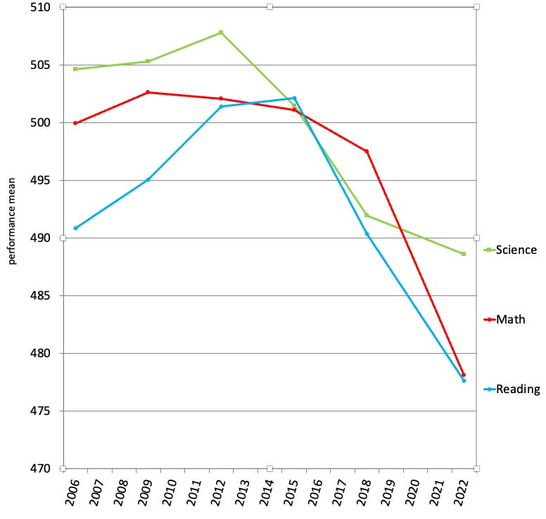
Figure 7: SAT Scores
Internet Addiction
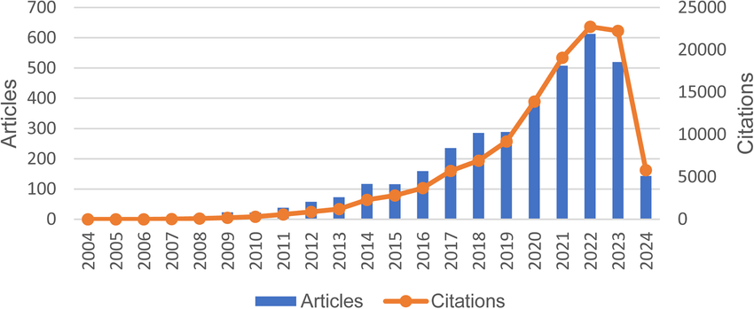
Figure 8: Internet Addiction
Sleep Abnormalities
Between 2010 and 2021 there was increase of self-reported sleep problems in age groups 15 to 45 of 15% (34 -> 49%). In that time there was a 10x increase in melatonin usage (source: https://www.science.org/doi/10.1126/sciadv.adw1227)
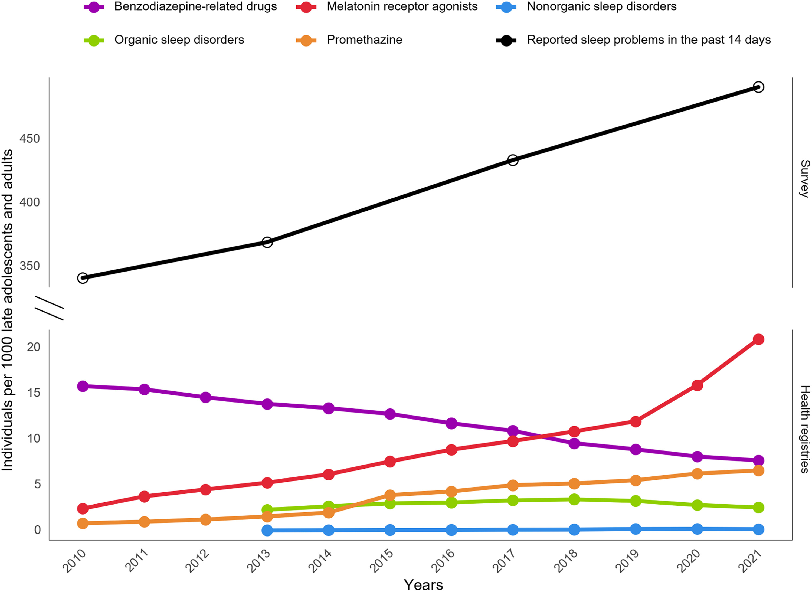
Figure 9: Sleep problems
Youth Mental Health
One of the most concerning trends of the past 15 years is the sharp increase in internalizing disorders—chiefly depression and anxiety—among young people. This rise marks a distinct break from the relatively stable trends of the early 2000s and appears to be a widespread phenomenon across the developed world.
Young females seem to be particularily affected, with large increases in self-harming and self-reported anxiety and depression.
The ease of access to social media websites via smartphones seems to line up with these rises in behaviour.
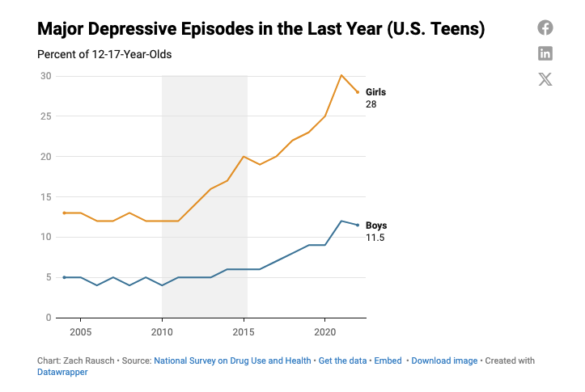
Figure 10: Youth Depression
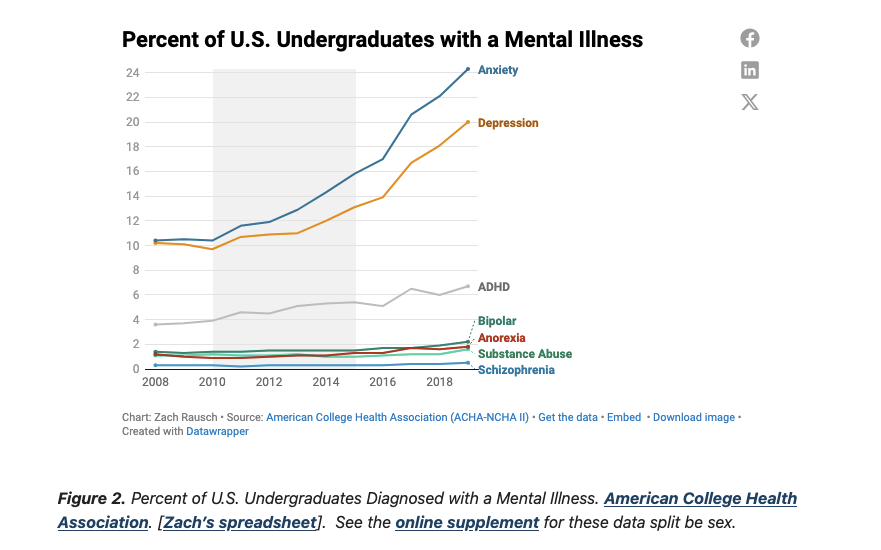
Figure 11: Youth Depression
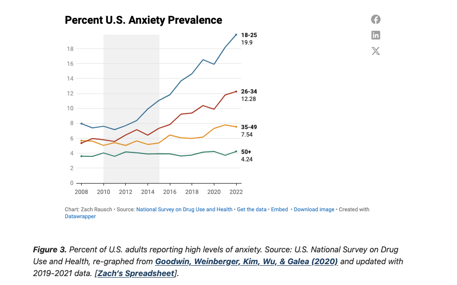
Figure 12: Youth Depression
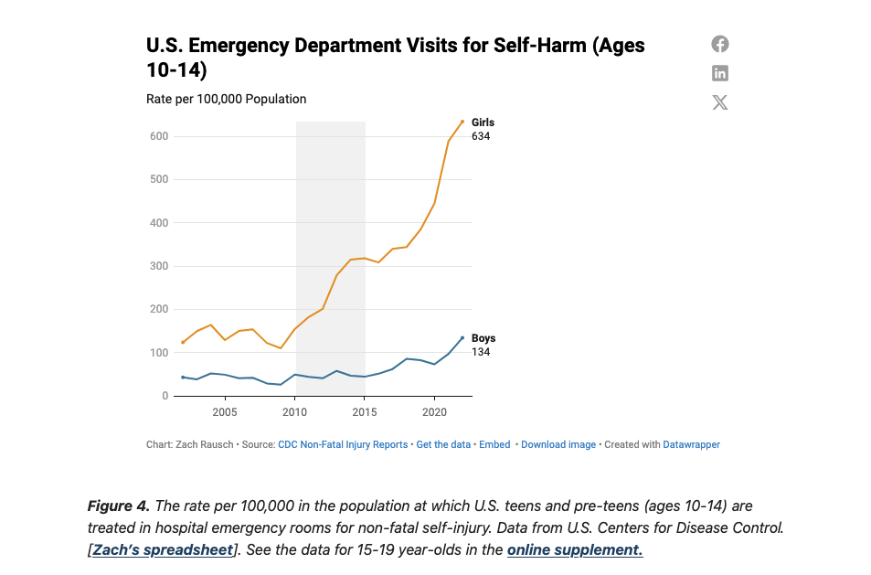
Figure 13: Youth Depression
Sources:
Loneliness
Survey data consistently identifies young adults as the demographic most acutely affected by loneliness. One comprehensive survey found that 61% of young adults in the U.S. aged 18 to 25 identified as "seriously lonely". Globally, the figures are similarly high, with one study finding that 27% of young adults aged 19 to 29 experience feelings of loneliness. When compared generationally, the contrast is stark. One report found that 80% of Generation Z individuals (born roughly 1997-2012) reported feelings of isolation over the past year, significantly higher than the 72% of Millennials and 45% of Baby Boomers who said the same
Sources:
Productivity
Economic productivity, specifically labour productivity (output per hour worked), is the primary driver of long-term improvements in living standards.
After a period of growth in the late 1990s and early 2000s, Labour productivity growth is slowing following the 2007-2009
The Great Recession and COVID are obviously huge drivers of lost productivity, but it stands to reason that if we're sleeping less, are more depressed, and have less socially active lives, our productive output will suffer in some way.
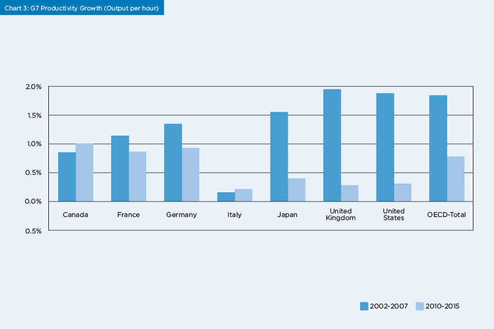
Figure 14: World Productivity
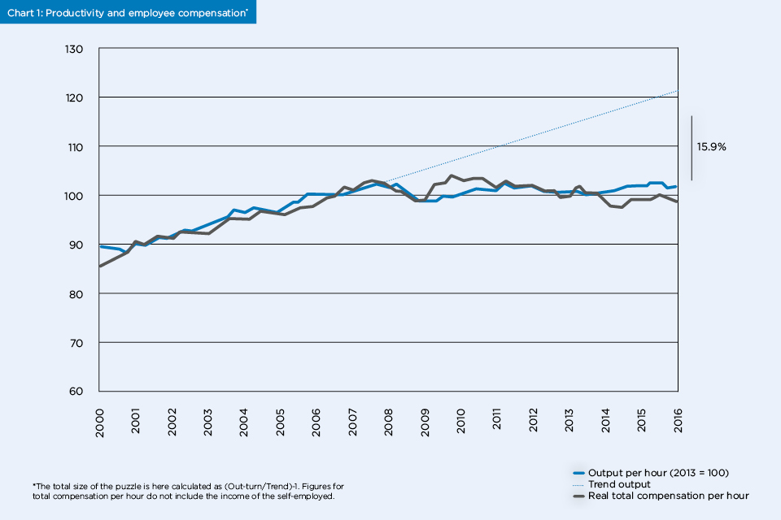
Figure 15: UK Productivity
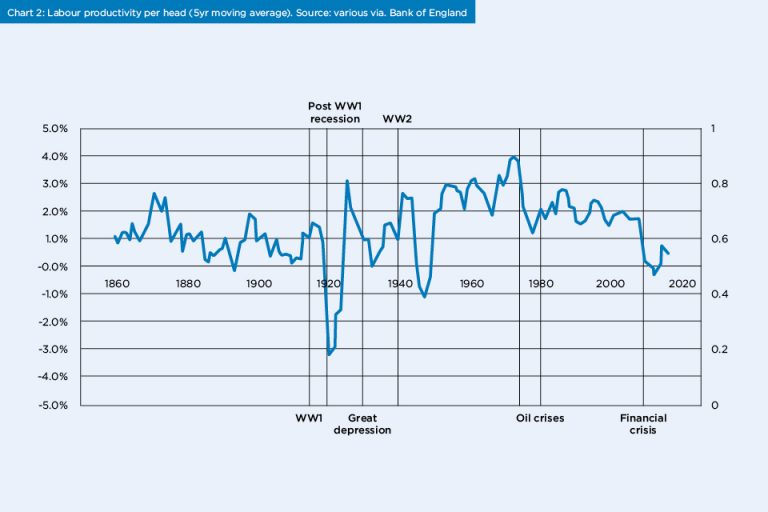
Figure 16: UK Productivity
Smartphones grab our attention so powerfully that if they merely vibrate in our pockets for a tenth of a second, many of us will interrupt a face-to-face conversation, just in case the phone is bringing us an important update.
— Jonathan Haidt, The Anxious Generation: How the Great Rewiring of Childhood Is Causing an Epidemic of Mental Illness
Do you think the same thing - smartphones are driving detrimental trends across the world?
Get in touch:
If you have some interesting charts in the same vein, please feel free to open a PR here or email me at 2007@adamfallon.com
If you are interested in doing research in this area, would love to speak!
You can find me here:
- adam@adamfallon.com / 2007@adamfallon.com
- https://x.com/afallon02
- https://www.linkedin.com/in/adam-fallon-4bb4b1300/